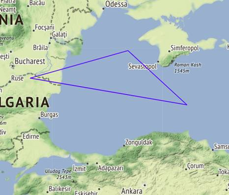
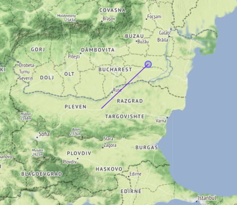
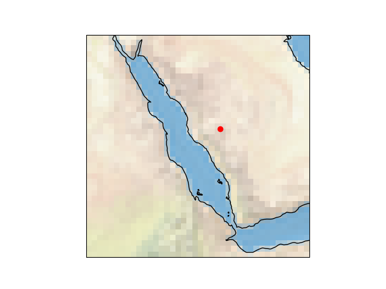
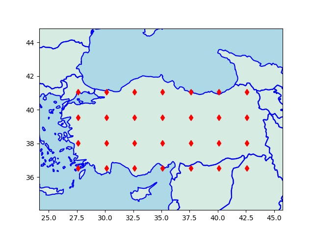
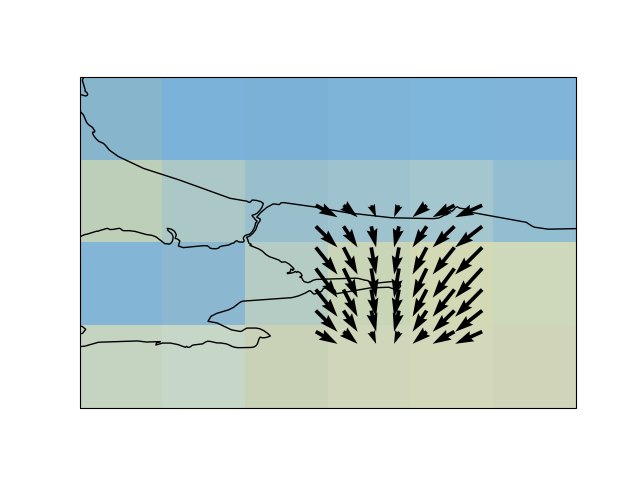
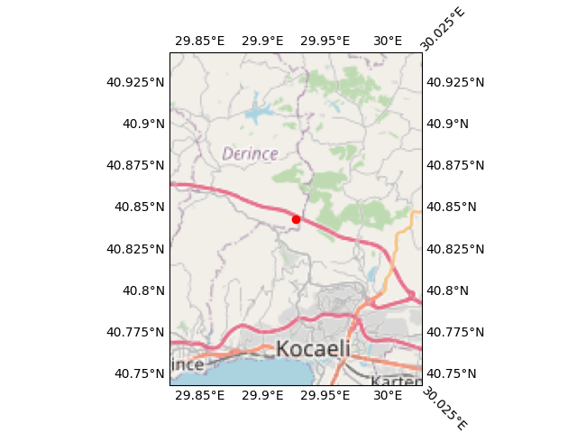

Haritalamak
Folium
Bu haritalama sistemi ile dünyanın herhangi bir yerini alıp, istenen odaklama seviyesinde göstermek, üzerini işaretlemek mümkün, ayrıca haritanın üzerinde isteğe göre çizgiler, çemberler vs çizilmesine izin veren çağrılar var. Folium arka planda bir Javascript kütüphanesi Leaflet kullanır, bu sebeple haritaları HTML olarak kaydediyorsunuz, bu HTML içine bakıldığında Leaflet çağrıları orada görülüyor. Leaflet son derece basit, hızlı işleyecek şekilde yazılmış, verisini arka planda direk OpenStreetMap dosyalarını okuyarak alıyor, onların gerekli yerlerini, hangisini alacağını arka planda hallediyor. Programcıya tek kalan harita merkezini, ek bazı görsel ayarları yapmak.
Not: Elde edilen HTML haritası etkileşimli (interactive) çalışıyor. Büyütme, küçültme, haritayı sağa sola kaydırma bu HTML sayfasında kullanıcı tarafından yapılabilir hala. Yani tek ölü bir görüntü dosyası almıyorsunuz.
Kurmak icin pip install folium
En basit kullanim belli noktalara yuvarlak isaretler koymak,
İşaretler
Harita üzerine konan işaretler içine tıklanabilir URL bağlantıları konabilir. Ayrıca bu işaretler fare ile üzerinde durunca bir araç ipucu (tooltip) gösterebilir.
m = folium.Map(location=[45.372, -121.6972], zoom_start=12, tiles="Stamen Terrain")
tooltip = "Click me!"
folium.Marker(
[45.3288, -121.6625], popup="<i>Mt. Hood Meadows</i>", tooltip=tooltip
).add_to(m)
m.save("/tmp/index.html")
Üstteki kodda görülen popup içine a href ifadesi de konulabilir,
böylece fare üstünde olunca önce ipucu, ona tıklanınca çıkan bölgede
tıklanabilir bir URL bağlantısı olacaktır. Biz ayrıca bu bağlantıyı
target='_blank' rel='noopener noreferrer' ile yarattık, böylece
tıklama bizi tarayıcıda ayrı bir tab'e götürüyor.
Kapalı Alanlar, Poligon
import folium
m = folium.Map(location=[lat1,lon1], tiles='Stamen Terrain', zoom_start=7)
coordinates=[(43,35),(44,27),(45,32)]
folium.Polygon(locations=coordinates,weight=2,color = 'blue').add_to(m)
m.save("/tmp/index.html")

Eğer kapalı alan yerine sadece başlangıç ve bitiş kordinatları arasında bir parçalı çizgi çizilsin istiyorsak
folium.PolyLine(locations=coordinates, color="blue").add_to(map)
gibi bir çağrı gerekirdi.
Başlık Eklemek
import folium
lat1,lon1 = 43.4521793912598, 25.597125946810632
lat2,lon2 = 44.572754823623114, 27.250000972553345
m = folium.Map(location=[lat1,lon1], tiles='Stamen Terrain', zoom_start=7)
folium.CircleMarker(location=(lat2,lon2),
fill_color='blue', radius=10, rotation=1.5).add_to(m)
title_html = "<h3>Title</h3>"
m.get_root().html.add_child(folium.Element(title_html))
m.save("/tmp/index.html")

lat1,lon1 merkezli bir harita çizdik, odak seviyesi 7, ve lat1,lon1 den
başlayıp lat2,lon2 de biten bir çizgi çektik, ve çizgi sonuna ufak bir daire
koyduk.
Ek bilgiler [5],[6],[7] de bulunabilir,
Cartopy
Kullanisli bir paket; fakat isletim sistemi seviyesinde GEOS paketinin kurulmasi gerekli, bu bazi barindirilan, idareli bulut sistemlerinde problem cikartabilir, cunku bu tur servislerde direk isletim sistemine erisim her zaman mumkun olmayabiliyor.
sudo apt install libproj-dev proj-data proj-bin libgeos-dev
pip install cartopy
pip uninstall shapely
pip install shapely --no-binary shapely
Dünya haritası üzerinde bir nokta
import cartopy.crs as ccrs
import cartopy
fig = plt.figure(figsize=(5, 2))
ax = fig.add_subplot(1, 1, 1, projection=ccrs.PlateCarree())
ax.set_global()
ax.stock_img()
ax.coastlines()
ax.plot(42.0, 21.53, 'ro', transform=ccrs.PlateCarree())
plt.savefig('har1.png')

Eger daha yakindan gostermek istersek, ilgilendigimiz bolge uzerinden bir kutu yaratabiliriz,
import cartopy.crs as ccrs
import cartopy
fig = plt.figure()
ax = fig.add_subplot(1, 1, 1, projection=ccrs.PlateCarree())
ax.set_global()
ax.stock_img()
ax.coastlines()
ax.plot(42.0, 21.53, 'ro', transform=ccrs.PlateCarree())
ax.set_extent([30, 50, 10, 30])
plt.savefig('har3.png')

Ülke ismi bazlı tüm ülkeyi renklendirmek,
import matplotlib.pyplot as plt
import cartopy.io.shapereader as shpreader
import cartopy.crs as ccrs
import cartopy.feature as cfeature
def area(ax, iso, clr) :
shp = shpreader.natural_earth(resolution='10m',category='cultural',
name='admin_0_countries')
reader = shpreader.Reader(shp)
for n in reader.records() :
if n.attributes['ADM0_A3'] == iso:
ax.add_geometries(n.geometry, ccrs.PlateCarree(), facecolor=clr)
return ax
fig = plt.figure(figsize=(5, 2))
ax = fig.add_subplot(1, 1, 1, projection=ccrs.PlateCarree())
ax = plt.axes(projection=ccrs.PlateCarree())
ax.stock_img()
ax.coastlines()
area(ax, "USA", "red")
plt.savefig('har2.png')

Izgara Yaratmak
İki köşesi tanımlanan bir dikdörtgen üzerinden bir izgara tanımlayabiliriz,
import simplegeomap as sm, numpy as np, matplotlib.pyplot as plt
from pygeodesy.sphericalNvector import LatLon
res1 = LatLon(36.52259447316748, 27.612981046240638) # sol alt
res2 = LatLon(41.05628025861666, 42.58542464923075) # sag ust
41.40662366577505, 27.255002668187043
lowlat = np.min([res1.lat,res2.lat])
lowlon = np.min([res1.lon,res2.lon])
hilat = np.max([res1.lat,res2.lat])
hilon = np.max([res1.lon,res2.lon])
x = np.linspace(lowlon,hilon,7)
y = np.linspace(lowlat,hilat,4)
xx,yy = np.meshgrid(x,y)
Eğer bir merkez nokta etrafında tek bir mesafe uzaklığı baz alıp bir ızgara yaratmak istiyorsak,
p1 = LatLon(clat,clon)
EARTH_RAD = 6371
upright = p1.destination (dist, bearing=45, radius=EARTH_RAD)
lowleft = p1.destination (dist, bearing=225, radius=EARTH_RAD)
latmin = np.min([lowleft.lat, upright.lat])
latmax = np.max([lowleft.lat, upright.lat])
lonmin = np.min([lowleft.lon, upright.lon])
lonmax = np.max([lowleft.lon, upright.lon])
x = np.linspace(lonmin,lonmax,N)
y = np.linspace(latmin,latmax,N)
xx,yy = np.meshgrid(x,y)
latints = np.unique(x.astype(np.int))
lonints = np.unique(y.astype(np.int))
Bu kod 45 derece kuzeydoğu 225 derece güneybatıya dist mesafesi
kadar adım atıp o noktaları sağ üst, sol alt köşe olarak kabul etti ve
bu dikdörtgeni baz alıp bir N*N noktalı bir ızgara yarattı. Ayrıca o
ızgara noktalarındaki tüm kordinatların enlem, boylam değerlerinin tam
sayı bazlı bir listesini de hesapladı, bu bilgi pek çok uygulamada
lazım olabiliyor (mesela tam sayı enlem/boylam bazlı bazı bilgiler
önbellekte, tabanda tutulmuş olabilir, ve üstteki tam sayılar ile
bu bölgesel bilgiler tabandan alınabilir).

Oklar, Quiver
Cartopy haritaları üzerinde klasik matplotlib komutlarını hala
kullanabiliriz, enlem, boylam kordinatları y ve x eksenleri haline
geliyor, ve gerisi bildiğimiz gibi. Mesela ok çizmek için kullanılan
quiver hala geçerli, mesela o ızgara noktalarındaki rüzgar yönü
verisi elimizde olsaydı, bunu harita üzerinde
grafikleyebilirdik. Altta bu veri sin ve cos üzerinden uyduruk
şekilde yaratıldı,
fig = plt.figure()
ax = fig.add_subplot(1, 1, 1, projection=ccrs.PlateCarree())
ax.set_global()
ax.stock_img()
ax.coastlines()
u = np.sin(xx.flatten()*2)
v = np.cos(yy.flatten()*3)
ax.quiver(xx.flatten(), yy.flatten(), u, v)
ax.set_extent([28, 31, 40, 42])
plt.savefig('har5.png')

Eğer ana enlem, boylamları kordinate eksenleri üzerinde görmek istersek, basmadan önce
gl = ax.gridlines(crs=ccrs.PlateCarree(), draw_labels=True, linewidth=0)
uygulayabiliriz.
Katmanlar
Üstteki karayı ve denizleri gösteren renklendirme sonradan uygulanan bir katmandır. Cartopy bu şekilde pek çok farklı bilgiyi katman olarak haritalara uygulayabilir. Mesela yol, sehir bilgileri de birer katman olarak alttaki gibi alınabilir,
import cartopy.crs as ccrs
import cartopy
import cartopy.io.img_tiles
lat,lon=40.84343206497589, 29.926342357515754
fig = plt.figure()
imagery = cartopy.io.img_tiles.OSM()
ax = fig.add_subplot(projection=imagery.crs)
zoom = 10
ax.add_image(imagery, zoom)
ax.plot(lon, lat, 'ro', transform=ccrs.PlateCarree())
EXT = 0.1
ax.set_extent([lon-EXT, lon+EXT, lat-EXT, lat+EXT])
gl = ax.gridlines(crs=ccrs.PlateCarree(), draw_labels=True, linewidth=0)
plt.savefig('har6.png')

SHP ile Kendimiz Sınır Çizelim
Bazen Cartopy ve hatta Folium bile uygulamamıza biraz yük getirebiliyor, mesela Cartopy kurulumu için arka planda GDAL gerekebilir, bu kütüphane arka planda işletim sistemi ek kurulumu gerektirir, ve bulut ortamında uygun olmayabilir. Folium hafif olsa da arka planda bağlantı gerektiriyor, çünkü zoom yapınca ek bilgiler servisten alınıyor.
Eğer bize gayet basit, ülke sınırlarını bir kerede ağ bağlantısı
olmadan pat diye çizebilecek bir kod gerekiyorsa, bu bilgileri taşıyan
dosya bazlı veri tabanları kullanabiliriz. PyShp ile SHP bazlı bu
tabanlara ulaşmak mümkündür. Mesela ülke sınırları [8]'de var,
TM_WORLD_BORDERS-0.3.zip indirilir, açılır, /tmp altında .shp ve
.dbf dosyaları olsun (ikisi de lazım),
import shapefile
sf = shapefile.Reader("/tmp/TM_WORLD_BORDERS-0.3.shp", encoding = "ISO8859-1")
Kaç ülke var burada,
r = sf.records()
countries = sf.shapes()
print (len(countries))
246
Bu ülkelerden indis 2'de olana bakalım,
idx = 2
country = countries[idx]
name = r[idx]
print (name)
Record #2: ['AJ', 'AZ', 'AZE', 31, 'Azerbaijan', 8260, 8352021, 142, 145, 47.395, 40.43]
Azerbeycan burada.
Peki ülkenin sınırları nerede?
print (len(country.points))
print (country.parts)
871
[0, 108, 118, 131, 859]
Ülke sınır noktaları points ile alınıyor, bir enlem/boylam
listesidir, kabaca bir polygonun köşe noktalarıdır. Fakat ülkeler
bazen tek kesintisiz bir parça olmayabiliyor, adalar, ya da diğer
ülkelerin içinde ufak parçalar vs var ise, bunları farklı poligon
öbekleri olarak temsil etmek lazım. Üstteki points içinde tüm
parçalar için noktalar var, hangi öbeğin nerede başlayıp bittiğini
bilmek gerekiyor sadece, parts içinde bu bilgi var [9]. Mesela
1'inci parça 0'dan başlayıp 107 indisine (dahil olmak üzere) uzanıyor,
108 nokta var. Sonraki 108'den başlayıp 117'ye gidiyor, vs.
Bu mantığı bir fonksiyon içine koyalım, ve indis 2 ve indis 4'teki ülkeleri grafikleyelim,
def plot_country(idx,color='r'):
country = countries[idx]
name = r[idx]
print (name)
bounds = list(country.parts) + [len(country.points)]
print (bounds)
for previous, current in zip(bounds, bounds[1:]):
geo = [[x[0],x[1]] for x in country.points[previous:current]]
if len(geo) < 1: continue
geo = np.array(geo)
if geo.shape[0] > 0:
plt.plot(geo[:,0],geo[:,1],color)
plot_country(2,'r')
plot_country(4,'b')
plt.savefig('harita-az-arm.png')
Record #2: ['AJ', 'AZ', 'AZE', 31, 'Azerbaijan', 8260, 8352021, 142, 145, 47.395, 40.43]
[0, 108, 118, 131, 859, 871]
Record #4: ['AM', 'AM', 'ARM', 51, 'Armenia', 2820, 3017661, 142, 145, 44.563, 40.534]
[0, 12, 395, 408, 418]

Azerbeycan ve Ermenistan'ı grafiklemiş olduk.
Not: Üstte plot çağrısının çizgisel kullanımına çağrı yapıldı,
bazılarımızın bildiği gibi plot(10,20,'.') x=10,y=20 kordinatlarına
bir nokta koyar, ama bir x kordinat ve y kordinat listesi plot
çağrısına geçilirse, bu tür çağrı verili noktalar arasına düz çizgiler
çek demektir.
Bir diğer ek, eğer o çizgilerle çevirdiğimiz bölgelerin içini bir
renkle doldurmak isteseydik, mesela elimizde bir göl için poligon
noktaları varsa, plt.plot yerine plt.fill kullanırdık, bu
çağrıya geçilen üçüncü parametre renk ile objenin içi doldurulur.
Kaynaklar
[1] https://rabernat.github.io/researchcomputing2018/maps-with-cartopy.html
[2] https://scitools.org.uk/cartopy/docs/latest/gallery/global_map.html#sphx-glr-gallery-global-map-py
[3] https://github.com/SciTools/cartopy/issues/1303
[4] Renk isimleri - https://matplotlib.org/3.1.0/gallery/color/named_colors.html
[5] https://python-visualization.github.io/folium/quickstart.html
[6] https://stackoverflow.com/questions/39093250/is-it-possible-to-draw-lines-with-arrowheads-in-a-folium-map
[7] https://www.geeksforgeeks.org/stamen-toner-stamen-terrain-and-mapbox-bright-maps-in-python-folium/
[8] https://thematicmapping.org/downloads/world_borders.php
[9] Sileika, Pro Python System Administration
[10] [Yükseklik (Elevation) Verileri](2019/04/elevation.html)
Yukarı